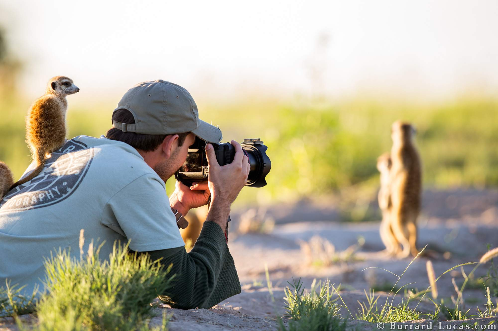

Gear & Planning • Philippines
Photography Tips
Use natural light, keep your camera steady, and compose shots with foreground and background. Ask permission before photographing people and never leave trails for a photo.
Helpful reminders
- Use natural light during early morning or late afternoon.
- Keep your camera or phone steady to avoid blurry pictures.
- Include foreground and background elements for better composition.
- Ask permission before photographing people or local communities.
- Stay on marked trails when taking photos.
- Avoid disturbing wildlife just to get a picture.
- Protect your camera from rain, dust, and moisture.
- Bring extra batteries or a power bank for longer trips.
- Respect park rules and restricted photography areas.
- Leave nature undisturbed and take all trash with you.